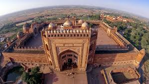

Fatehpur sikri

Fatehpur Sikri is a town in the Agra District of Uttar Pradesh, India. The city was founded in the year 1569 by the Mughal Emperor Akbar the Great, and served as the capital of the Mughal Empire from 1571 to 1585, when it was abandoned. After his military victories over Chittor and Ranthambore, Akbar decided to shift his capital from Agra to a new location 23 miles (37 km) south-west, to honour the Sufi saint and Salim Chishti.

HOW TO REACH ?
Nearest Airport:agra
Nearest Railway Station:agra
Nearest Bus Stand:agra